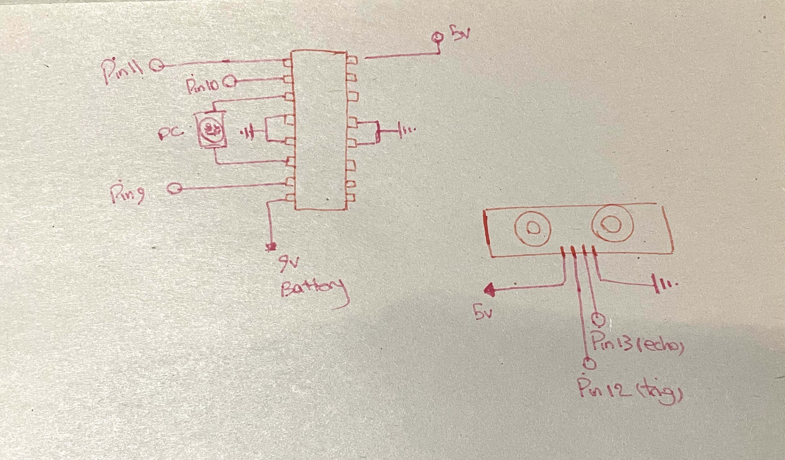

High Voltage and Transistors
Picture of the circuit!

gif of the circuit!

Schematic of the circuit!

int trig= 12; //Connect trig pin of the ultrasonic sensor to pin 12
int echo = 13; //Connect echo pin of the ultrasonic sensor to pin 13
int enablePin = 11; //Connect enablePin pin of the H-bridge to pin 11
int in1Pin = 10; //Connect in1 of the H-bridge to pin 10
int in2Pin = 9; //Connect in2 of the H-bridge to pin 9
void setup()
{
Serial.begin(9600);
pinMode(trig , OUTPUT); //Set trig as an output
pinMode(echo , INPUT); //Set echo as an input
pinMode(in1Pin, OUTPUT); //Set in1Pin as an output
pinMode(in2Pin, OUTPUT); //Set in2Pin as an output
pinMode(enablePin, OUTPUT); //Set enablePin as an output
}
void loop()
{
digitalWrite(trig , HIGH); // Set trig to high
delayMicroseconds(1000); // Wait 0.001 S
digitalWrite(trig , LOW); // Set rig to low
int duration = pulseIn(echo , HIGH); // calculate duration
int distance = (duration / 2) / 28.5 ;// calculate distance in CM
if ( distance < 50 ) { // if the distance was les than 50 cm turn the DC motor to right
Serial.print(distance); // print the distance information
analogWrite (enablePin, 120); // run the motor in this speed
digitalWrite(in1Pin, LOW); //set to low
digitalWrite(in2Pin, HIGH); //set to high
Serial.println("cm MOTOR START"); // write the distance in cm and add MOTOR START
delay(1000); // wait for 1s
}
else { // otherwise turn the motor off
Serial.print(distance); // print the distance information
analogWrite (enablePin, 256);
digitalWrite(in1Pin, LOW); // set to low
digitalWrite(in2Pin, LOW); // set to low
Serial.println("cm MOTOR STOP"); // write the distance in cm and add MOTOR STOP
delay(1000); // wait for 1s
}
}